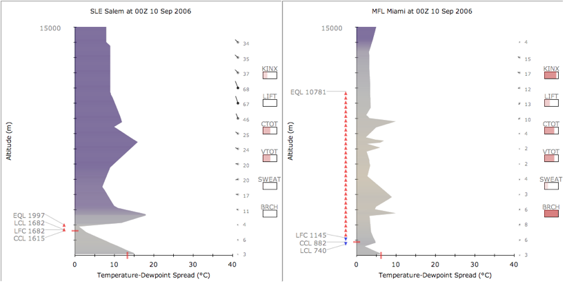
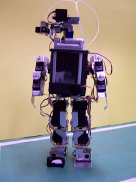
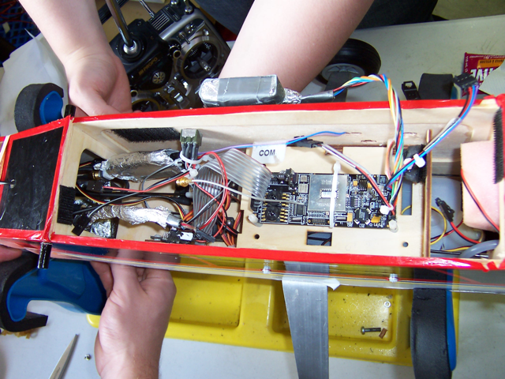

I am a computer scientist interested in object recognition, machine learning, and applications of deep neural networks.
Currently: data scientist at Kobo, webmaster for the Webster Memorial Trophy Competition, amateur sprinter, Class 1 Flight Instructor (not active).
Formerly: Head of R&D for Shelfie, Canadian Forces Officer (Cadet Instructor Cadre), 2× Google Intern.
Selected Publications
Sancho McCann. “Object classification and localization using spatially localized features”. Ph.D. Dissertation. UBC Department of Computer Science. 2014. [pdf]
Sancho McCann and David G. Lowe. “Spatially Local Coding for Object Recognition.” ACCV, 2012. [pdf] [poster] [project page]
Sancho McCann and David G. Lowe. “Local Naive Bayes Nearest Neighbor for Image Classification.” CVPR, 2012. [pdf] [project page]
A more complete list is at my Google Scholar profile.
Selected Projects
AtmosView: Visualization Redesign
 I created AtmosView, a new visualization of atmospheric sounding data (vertical profiles of the atmosphere’s temperature and humidity). People use this data to predict soaring conditions, atmospheric stability, and the likelihood of severe weather. Previous diagrams have been called the most difficult atmospheric diagrams to read. AtmosView helps people to see better the information they’re interested in and allows for easier comparisons between multiple charts.
{kind=link}
Sancho McCann. “Atmospheric Sounding Visualization.” [project report]
Humanoid Robot
 I worked with Dr. Jacky Baltes to build a small-size humanoid robot. I coded in C and cross compiled for the ARM processor on a Sony Clie. I programmed it to walk and to find and kick a ball. This was our entry in the 2005 FIRA RoboWorld Cup.
{kind=link}
Sancho McCann and Jacky Baltes. “Abarenbou–A Small Vision-Based Humanoid Robotic Research platform.” In Proc. of the Third International Conference on Computational Intelligence, Robotics, and Autonomous Systems (CIRAS), 2005. [pdf]
Robot Airplane
 At the University of Manitoba, I was part of a team that built a robot airplane that could take-off, fly a search pattern, and land—all autonomously. The airplane sent a video feed and telemetry to a ground station, where one of our teammates could mark targets of interest and report their coordinates. We placed first out of seventeen teams in a competition that included BYU, University of Texas, Cornell, MIT, and UCSD. I wrote much of the computer vision code, which transformed the video feed’s pixel coordinates into GPS coordinates, and presented that information to our ground station’s operator.
{kind=link}
Paul Furgale, Sancho McCann, Jim Majewski, Andrew Bugera, and Kory Zelickson. “Team Manitoba 2006 AUVSI Student Competition Project Description.” AUVSI: 4th Annual Student Unmanned Aerial Vehicle Competition, 2006. [pdf]